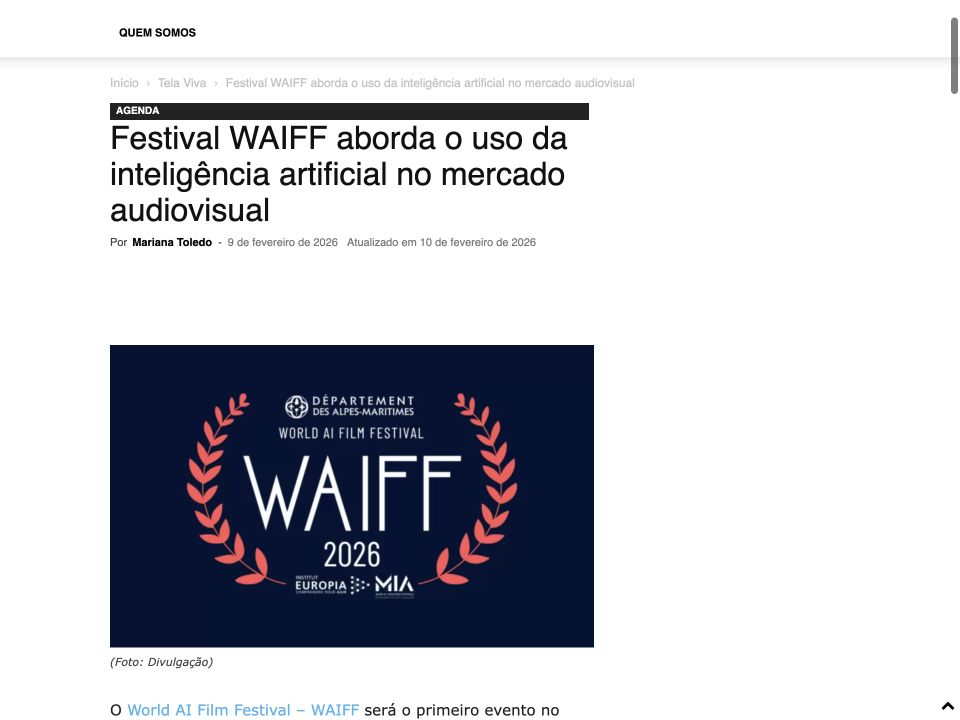
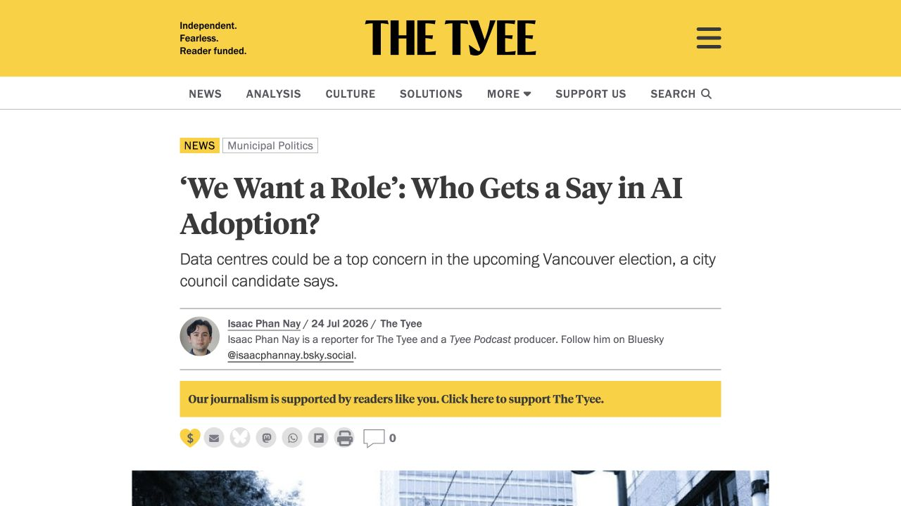
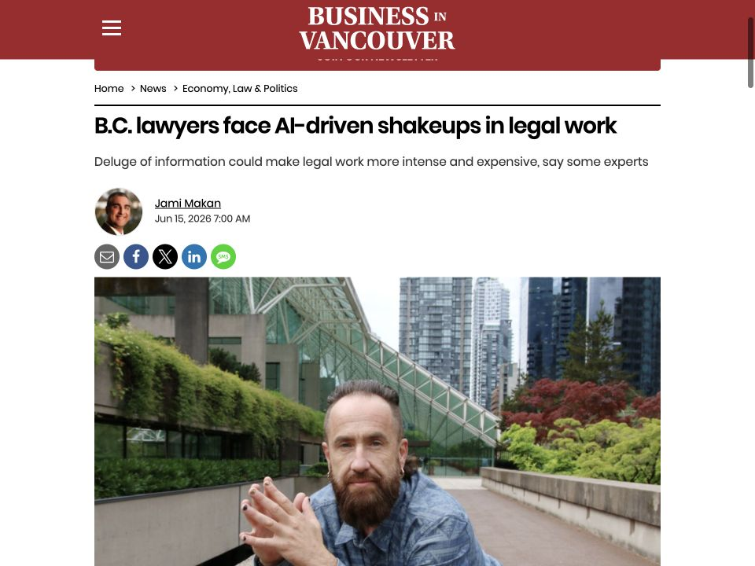
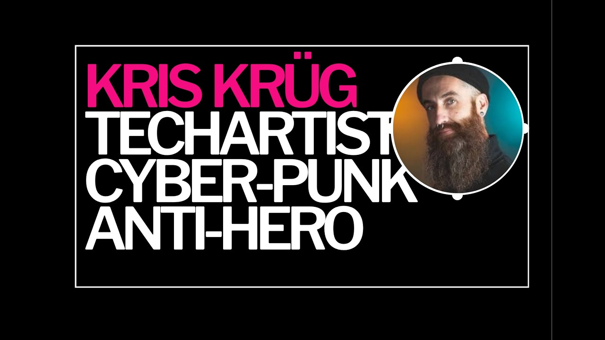
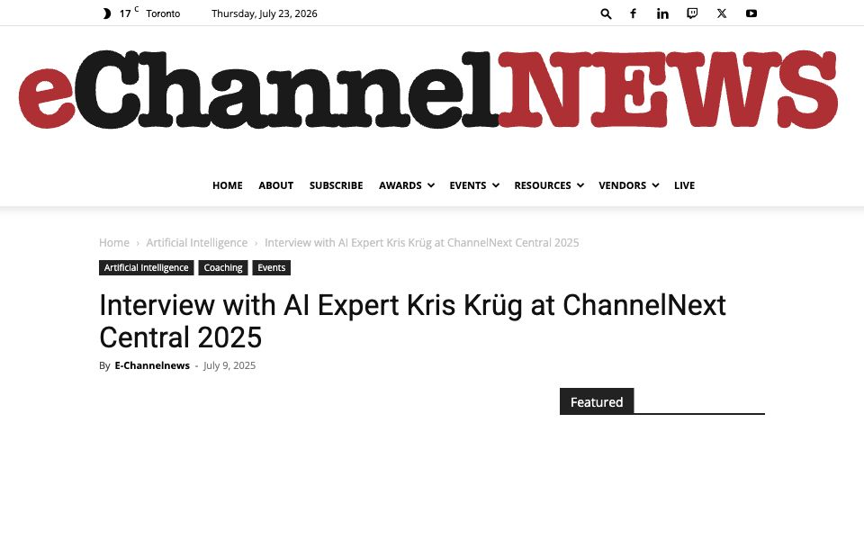
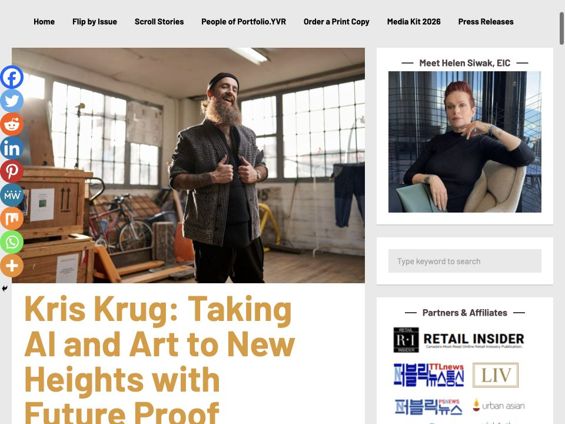

International press / Tela Viva News
WAIFF examines artificial intelligence in the audiovisual market

Press, interviews, and citations / 2006 to now
The useful story is the accumulation: independent reporting, long-form conversations, business coverage, public-interest debate, and the occasional gloriously strange corner of the internet. This archive starts with what just happened and moves backward. The older web is still here, but it no longer gets the first screen.
The newest three stories show where the work is landing right now: public AI infrastructure, the future of professional work, and a long conversation about authorship and consent.

Kris brings a non-partisan lens to AI infrastructure as heavy industry, public bargaining, and consultation that can change outcomes.
The interview carries the argument from Both Hands on the Grid into Vancouver’s municipal debate.
Coverage screenshot: The Tyee.

Lead expert commentary on adoption, training, culture, and where human judgment still matters.
Coverage screenshot: BIV. Article photo: Rob Kruyt / BIV.

A long-form conversation about creative practice, generative AI, authorship, consent, and community infrastructure.
Published interview thumbnail: TELUS STORYHIVE / Haus of Owl.
Newest first, with no attempt to sand the variety down. Policy, podcasts, art, scholarship, workshops, and broadcast commentary all belong to the same public record.



The early web is part of the story, just not the whole story. Open the archive for 25 more clippings spanning photography, citizen media, Creative Commons, startups, protest documentation, and social technology.
For current bios, approved headshots, interview topics, and producer-friendly context, use the media kit. For AI policy and infrastructure reporting, the Both Hands on the Grid position paper is the fastest route into the argument.